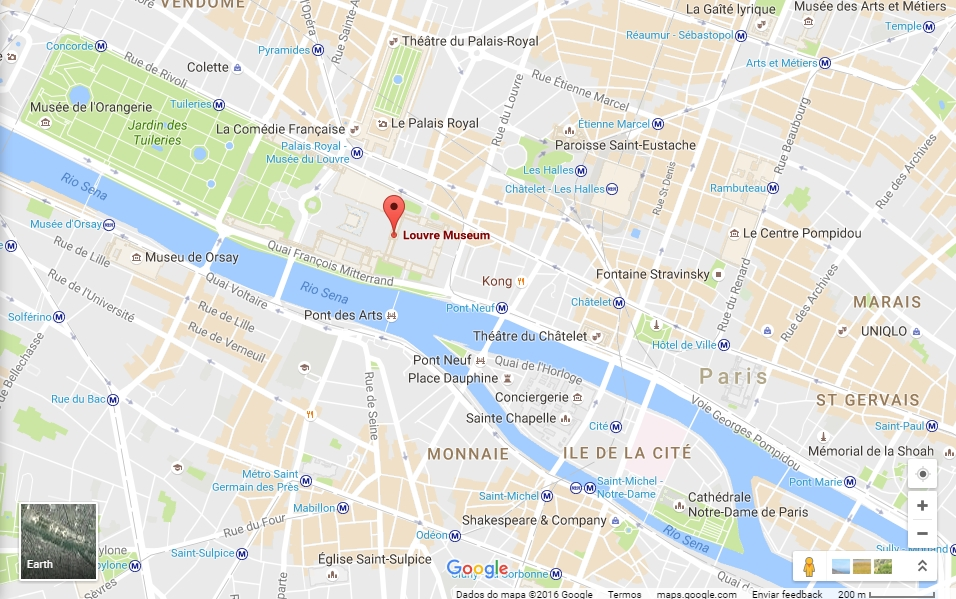

Localidade:
O Museu de Louvre está localizado no coração de Paris, às margens do rio Sena. É o maior e mais visitado museu de arte do mundo, abrigando obras de valor inestimável.
🖼 Museu do Louvre: Fatos e Curiosidades
História e Construção
- Originalmente um palácio real construído no século XII.
- Transformado em museu durante a Revolução Francesa, em 1793.
- Possui mais de 72 mil metros quadrados de área de exposição.
Acervo
- Mais de 380 mil objetos, com 35 mil em exibição.
- Obras famosas: Mona Lisa, Vênus de Milo, A Liberdade Guiando o Povo.
- Seções: Antiguidades Egípcias, Gregas, Romanas, Pinturas, Esculturas e muito mais.
Arquitetura Moderna
- A pirâmide de vidro na entrada foi inaugurada em 1989.
- Projeto do arquiteto chinês-americano I. M. Pei.
Curiosidades
- Recebe cerca de 10 milhões de visitantes por ano.
- Foi cenário de filmes como "O Código Da Vinci".